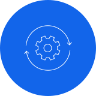

Autorisierte Security-Tests
Penetrationstests für
Webanwendungen und APIs
Wir prüfen klar abgegrenzte Anwendungen, APIs und KI-gestützte Systeme auf praktisch ausnutzbare Schwachstellen und liefern reproduzierbare Befunde statt einer reinen Scanner-Ausgabe.
Vorhaben einordnenEine Anwendung kann alle automatischen Prüfungen bestehen und dennoch über Geschäftslogik, Rollenwechsel, API-Verkettungen oder fehlerhafte Systemgrenzen angreifbar sein. Ein manueller, risikobasierter Test untersucht genau diese realen Angriffspfade.
Ihr Ergebnis: Sie erhalten einen verständlichen Executive Summary, technische Reproduktionsschritte, Risikoeinordnung, Behebungsempfehlungen und auf Wunsch einen dokumentierten Retest.

Leistungsumfang
Was wir analysieren und umsetzen
- Webanwendungen und Single-Page-Applications
- REST-, GraphQL- und vergleichbare APIs
- Authentifizierung, Sessions und Account-Flows
- Autorisierung, Rollen und Mandantentrennung
- Eingaben, Datei-Uploads und Geschäftslogik
- Cloud-nahe Anwendungskonfigurationen
- KI-Agenten, Prompts, Tools und Datenzugriffe
- Verifikation bereits behobener Schwachstellen
Orientierung
Für wen die Leistung geeignet ist
Typische Ausgangslagen
- Webanwendungen und APIs vor Release oder Kundenabnahme
- Nach wesentlichen Änderungen an Rollen, Mandanten oder Geschäftslogik
- Zur unabhängigen Verifikation behobener Schwachstellen
Arbeitsgrundlage
- Schriftliche Autorisierung und verbindliche Rules of Engagement
- Risikobasierte Tests nach OWASP WSTG, ASVS und API Security Top 10
- Reproduzierbare Findings, sichere Evidenz und optionaler Retest
Kaufbare Ergebnisse
Ein klarer Einstieg mit verwertbaren Deliverables
Rules of Engagement
Schriftlich vereinbarter Scope, Methoden, Testfenster, Ausschlüsse, Notfallkontakt und Abbruchkriterien.
Penetrationstest-Bericht
Executive Summary sowie technische Findings mit Evidenz, Reproduktion, Auswirkung und Behebung.
Retest-Nachweis
Erneute Prüfung behobener Findings mit dokumentiertem Status und verbleibendem Restrisiko.
Vorgehen
Strukturiert vom Scope bis zum Nachweis
Scope und schriftliche Autorisierung festlegen
Angriffsfläche und Testfälle vorbereiten
Manuelle und unterstützende technische Tests durchführen
Befunde sicher validieren und sofort eskalationsfähige Risiken melden
Bericht besprechen, Behebung begleiten und retesten
Häufige Fragen
Wichtige Fragen vor dem Projektstart
Verwandte Leistungen
Technische Themen im Zusammenhang
Vorhaben oder Risiko gemeinsam einordnen
Beschreiben Sie uns kurz Ihre Ausgangslage. Sie sprechen direkt mit den Entwicklern und erhalten eine offene Einschätzung zum nächsten sinnvollen Schritt.